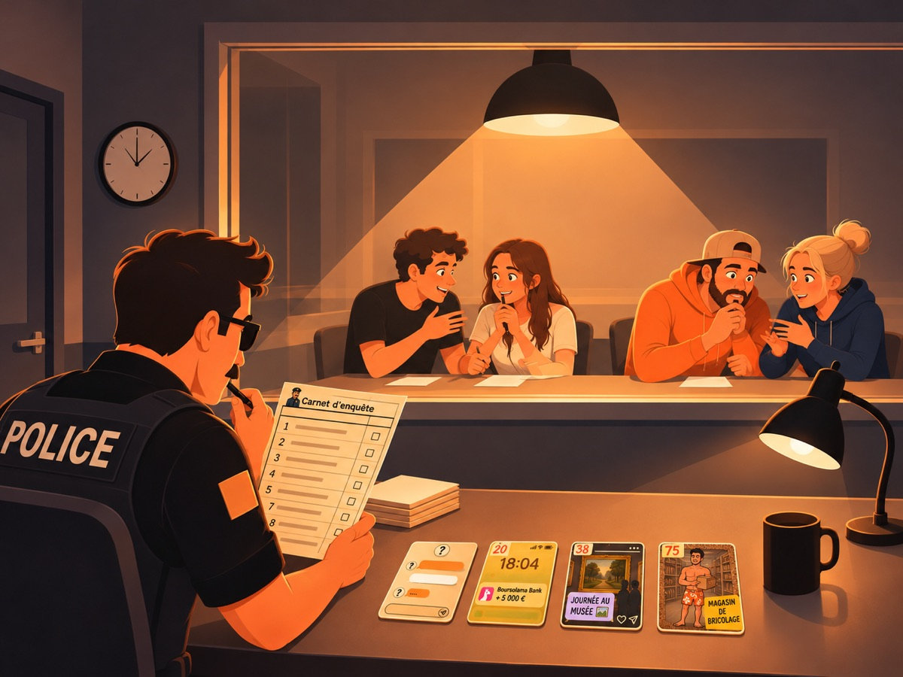
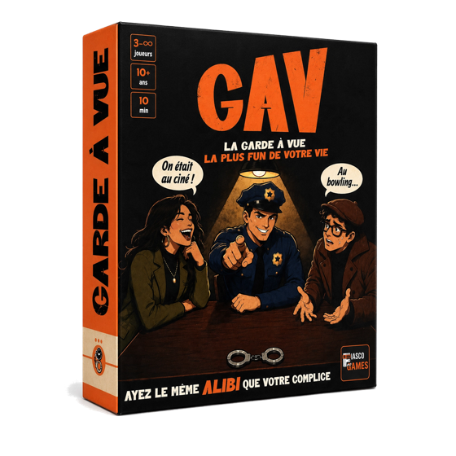
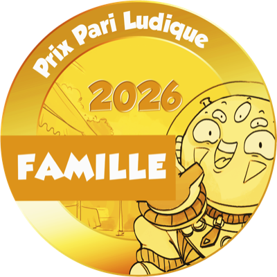
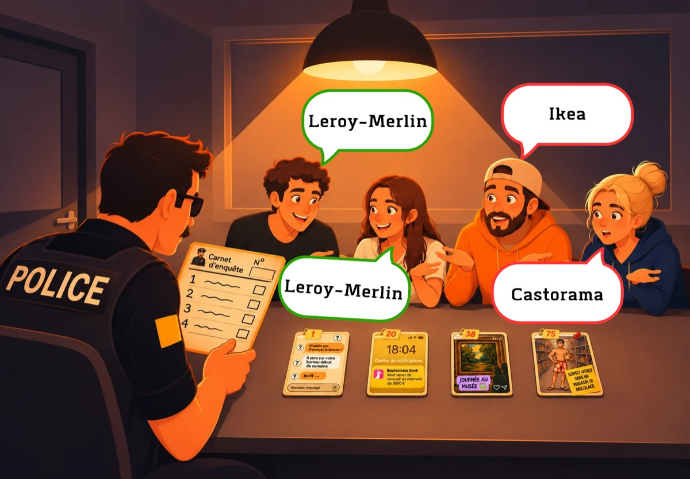

01 — La préparation
Chacun prépare son plan.

La police prépare ses 8 questions à l'aide des cartes Preuves, pendant que les suspects disposent de 3 minutes pour préparer leur alibi en binôme.
3 à 30 joueurs · à partir de 10 ans · 15 min par partie


🏆 Jeu inspiré du meilleur concept internet : ALIBI
Ton alibi va-t-il tenir ?Mettez-vous d’accord sur une histoire, puis répondez chacun de votre côté aux questions inventées par la police. Ayez les mêmes réponses, sinon direction la prison !
Pose ta question, l'assistant te répond à partir des règles officielles.
3 minutes pour préparer votre alibi. 8 questions pour le défendre.

La police prépare ses 8 questions à l'aide des cartes Preuves, pendant que les suspects disposent de 3 minutes pour préparer leur alibi en binôme.

Pendant l'interrogatoire, les suspects doivent donner exactement les mêmes réponses que leur binôme… sans répondre comme la police !
Tout ce qu'il faut savoir sur GAV, le jeu de société d'ambiance qui transforme un apéro entre amis en garde à vue improvisée.
Entre amis pour un apéro qui dérape, en couple pour tester votre complicité, en famille pour un fou rire général, ou entre collègues pour briser la glace comme jamais — GAV, le jeu de société, s'invite partout où on aime rire ensemble.
De 3 à autant que vous voulez — notre record est de 25 joueurs autour de la même table. Garde à vue, le jeu de société, s'adapte aussi bien à un apéro entre potes qu'à une soirée qui rassemble tout le monde.
Aucun rôle à apprendre : à chaque manche, un binôme devient la police et interroge les autres. À vous d'improviser et de rester cohérent avec votre complice, sous la pression.
Dès 10 ans. Des règles simples, aucun temps mort — toute la famille joue, et les ados adorent piéger leurs parents.
10 minutes par manche. Le temps de dire « on fait qu'une partie » avant d'enchaîner cinq fois de suite.
« Parfait jeu de famille et amis. Bonne ambiance et rigolade »
Val. ✓ Achat Amazon vérifié« Excellent jeu entre le petit bac et le Uno pour toute la famille. »
Aurna. ✓ Achat Amazon vérifié« Je ne regrette pas mon achat, on adore y jouer avec les enfants. »
Aurélie. ✓ Achat Amazon vérifié« Cadeau de Noël validé, crise de rire assurée »
SCH10. ✓ Achat Amazon vérifié« Le jeu est trop marrant on a fait 8 parties le même soir »
Dav. ✓ Achat Amazon vérifiéNous, c'est Galane et Florian ! 🧡
Mariés dans la vie, et maintenant complices dans une nouvelle aventure : Fiasco Games, notre maison d'édition de jeux de société !
Notre envie ? Créer des jeux qui transforment vos soirées entre amis, vos repas de famille ou vos pauses entre collègues en moments inoubliables.
Des fous rires incontrôlables, des retournements de situation improbables, des surprises et surtout des « MAIS NON, T'AS VRAIMENT FAIT ÇA ?! » 😂
Avec nos jeux, vous pouvez élaborer la meilleure stratégie du monde, penser avoir tout prévu, être sûrs de votre coup… et voir votre plan partir complètement en vrille !
Parce qu'au fond, les meilleurs souvenirs naissent souvent des plus beaux fiascos.
Et voilà, vous savez maintenant pourquoi on s'appelle Fiasco Games !
Notre mission est simple : créer des bons moments à partager, où rien ne se passe jamais vraiment comme prévu. 🧡